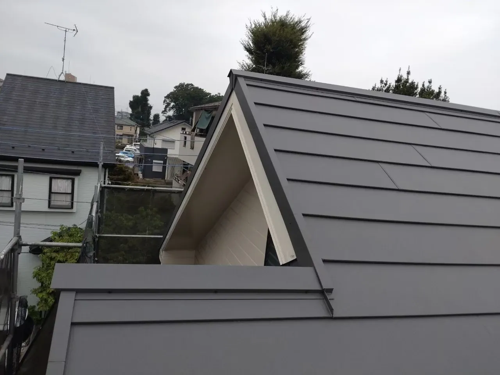
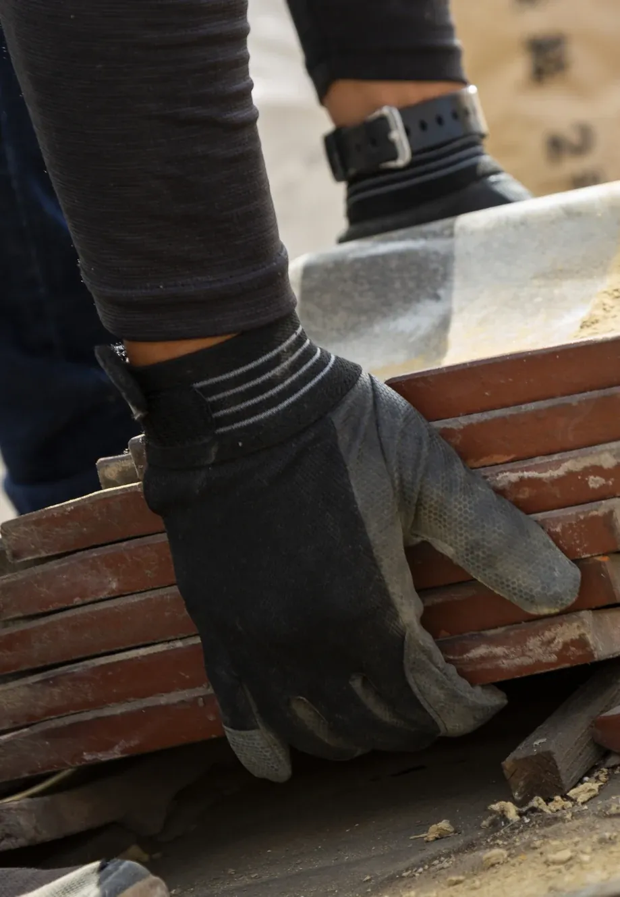
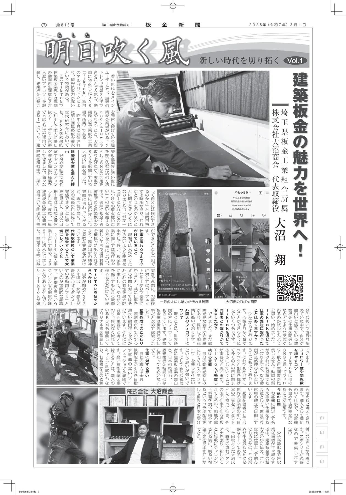
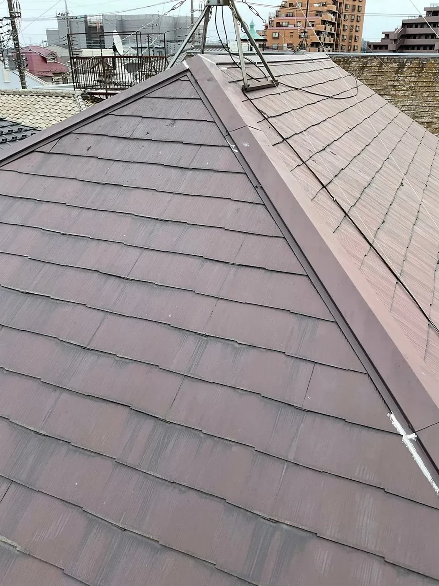
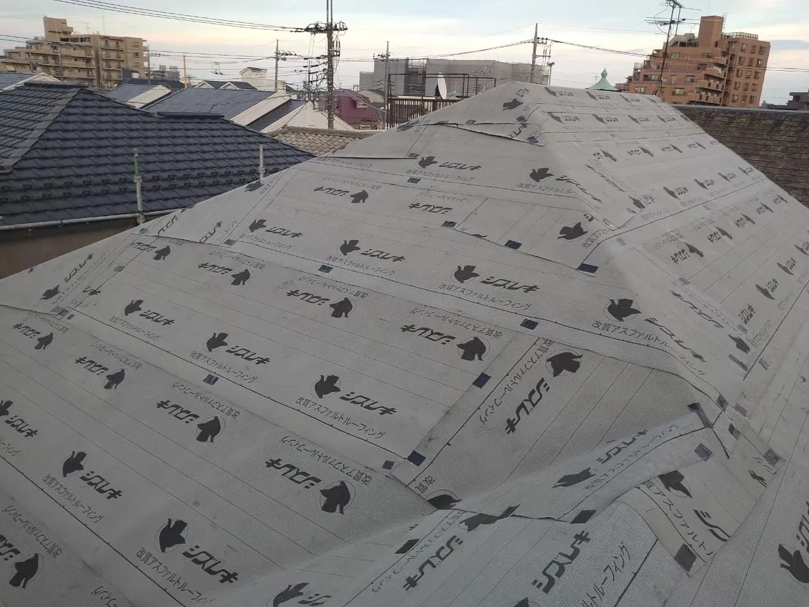
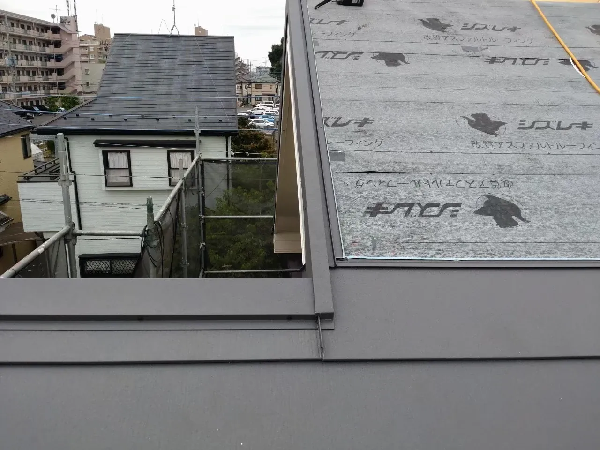
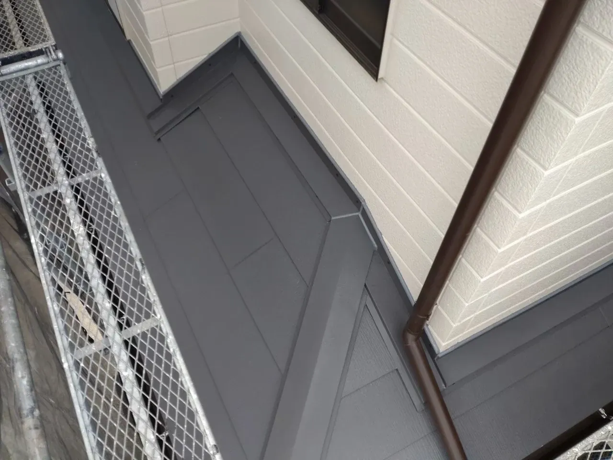

「一級技能士」による自社施工店
さいたま市南区を拠点に、埼玉県内を中心に。
埼玉の屋根に、
確かな技術を。
さいたま市から、地元の住まいへ。
屋根修理・雨漏り・屋根リフォームは（株）大沼商会に。
ご相談・現地調査・お見積もりは無料です。
電話で相談 048-708-0484屋根・板金の専門工事店
SCROLL TO DISCOVER大沼商会の仕事
一枚の板金に、
積み重ねた技術を。
屋根は、住まいを雨から守るもの。
その役割を支えるのは、屋根材だけではありません。
板金を折る。つなぐ。細部を納める。
一つひとつの手仕事が、屋根の仕上がりにつながります。
私たちは、埼玉県さいたま市南区を拠点とする屋根・板金工事の専門店です。資格に裏付けられた技術と、現場で積み重ねてきた経験を、地元・埼玉の一軒一軒へ。

資格に裏付けられた技術を、
地元・埼玉の屋根に。
現場を重ねてきた、経験。
大沼商会の仕事として、お届けする。
資格・施工実績・施工体制は大沼商会公式サイトの掲載情報に基づきます。

メディア掲載
屋根の上の仕事を、
もっと知ってほしい。
技術を磨くこと。そして、伝えること。
大沼商会の仕事への姿勢と、TikTokを通じた発信が、業界紙「板金新聞」で紹介されました。
PDF・約12MB / 別タブで開きます
屋根工事の施工動画
言葉よりも、
この手仕事を。
屋根全体の仕上がり。壁との境目。現場での手仕事。
TikTok「やねやろう」で発信する、実際の屋根工事です。
埼玉県新座市の施工事例
埼玉の現場で、
技術をかたちに。
埼玉県新座市 U様邸 / 屋根カバー工法
下屋や庇も含めた施工事例です。

下屋や庇まで、
屋根をリフォーム。
既存屋根の上に下葺き材と新しい屋根材を施工。屋根全体だけでなく、下屋や庇まで仕上げた事例です。
この工事の概要を見る
- 市区町村
- 埼玉県新座市
- 施工内容
- 屋根カバー工法。下屋・庇も施工。
左右に動かすと施工前後を比較できます。
写真は同じ建物ですが撮影位置が異なります。



わが家の屋根も、相談したい。
工事の内容が決まっていなくても、ご相談ください。
FROM THE SITE
日々の仕事が、
大沼商会をつくる。
屋根の上から、工房から。
公式SNSでも施工や技術について発信しています。
お客様の声
仕事の、その先に。
お客様から届いた声。
工事を頼む前に気になることを、
実際のお客様の口コミからご確認ください。
原因と工事の説明に、納得。
「また現地調査で雨漏りの原因や工事進行の説明も丁寧・納得できたので発注しました。」Googleマップで口コミを見る ↗
写真でわかる、作業の前後。
「当日の作業も丁寧で、作業前後の写真で状態をご説明頂けました。」Googleマップで口コミを見る ↗
丁寧な仕上がりに、満足。
「工事の仕上がりもすごく丁寧で、本当に大沼商会さんにお願いしてよかったです。」Googleマップで口コミを見る ↗
掲載文はGoogleの口コミから一部を抜粋しています。見出しは内容をもとに編集しています。
気になる屋根のこと、お聞かせください。
ご相談・現地調査・お見積もりは無料です。
屋根修理・屋根リフォーム
小さな補修から、
屋根の一新まで。
屋根の形も、傷み方も、一軒ごとに違うから。
現地を確認し、お住まいに合う工事をご提案します。
雨漏り・屋根の部分補修
雨漏り、棟板金の浮き、屋根材の傷み。原因と状態を調べ、必要な補修をご説明します。
相談する屋根カバー工法
既存の屋根の上に、新しい屋根を。屋根材や下地の状態を確認して、施工できるか判断します。
相談する屋根の葺き替え
古い屋根材を撤去して、新しい屋根へ。普段は見えない下地の状態も確認しながら施工します。
相談する雨樋・建築板金工事
雨樋の交換から、破風・鼻隠しの板金まで。建物の形に合わせた加工と、細部の仕上げを。
相談する工事内容・費用
工事費用は、屋根の状態に合わせて。
地元・埼玉の屋根工事
さいたま市から、
埼玉の屋根を支える。
屋根の技術を、地域の住まいのために。
大沼商会は、埼玉県内を中心に屋根修理・雨漏り・屋根リフォームのご相談を承っています。
会社概要
屋根のことなら、
大沼商会。
株式会社 大沼商会
- 代表取締役
- 大沼 翔
- 所在地
- 〒336-0042
埼玉県さいたま市南区大谷口1825-3 - 創業 / 設立
- 2011年12月 / 2021年12月
- 事業内容
- 屋根葺き替え・屋根カバー・棟板金交換
屋根部分補修・雨樋交換・建築板金工事 - 電話番号
- 048-708-0484
FIRST STEP
まずは、話すことから。
屋根の状態を確認し、必要な工事と見積もりをご説明。
ご相談から工事後までの流れをご紹介します。
現地調査とお見積もりは無料です。
- 01 / ご相談
気になることを伺う
電話またはフォームで、建物の市区町村と気になる症状をお聞かせください。埼玉県内を中心にご相談を承ります。
- 02 / 現地調査
屋根の状態を確認
屋根の状態を調べ、必要に応じて写真を撮影。どこに不具合があるか、現在の状態をご説明します。
- 03 / お見積もり
必要な工事と費用をご説明
調査結果に合わせて、必要な工事と見積もりをご説明します。異常が見つからない場合も、その結果をお伝えします。
- 04 / ご契約・施工
内容を決めて、工事へ
工事内容にご納得いただいてからご契約。予定した日程を目安に着工します。必要に応じて、着工前に近隣へご挨拶します。
- 05 / 完了確認
仕上がりを確認してお引き渡し
工事箇所をチェックし、お客様立ち会いのもとでお引き渡し。作業前後の写真で説明を受けたというお客様の声も届いています。
写真での説明についてのお客様の声 - 06 / 工事後の対応
気になることは、工事後も
お引き渡し後に気になる点があれば、大沼商会へご連絡ください。保証の内容・期間・対象条件は工事によって異なります。ご契約前にご確認ください。
大沼商会の相談窓口へ
FAQ
ご相談前の、
気になること。
費用や工事内容が決まっていない段階でも、
お気軽にご相談ください。
相談・現地調査・見積もりは無料ですか？
小さな補修や、雨樋だけでも頼めますか？
他社の見積もりと比較してもよいですか？
工事費用はどのくらいかかりますか？
どの地域から相談できますか？
雨漏りしていて急ぎの場合は？
LET'S TALK ABOUT YOUR ROOF
埼玉のわが家に、
大沼商会の技術を。
さいたま市・埼玉県で、屋根工事をご検討の方へ。
雨漏りや屋根の傷みを、地元の専門工事店にご相談ください。
ご相談・現地調査・お見積もりは無料です。
工事の内容が決まっていなくても、ご相談ください。
埼玉県内を中心に対応。県外の近隣地域は事前にご相談ください。
まずは建物の市区町村と、気になる症状をお伝えください。
相談フォームは現在の公式サイトに移動します。